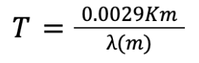
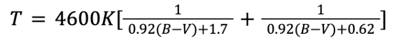
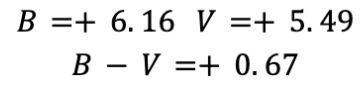
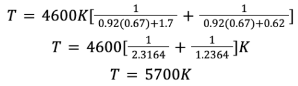

The second big piece of the puzzle towards stellar masses and sizes is
understanding the temperatures of the stars. Very early on by the 19th
century, scientists were experimenting with so-called
black bodies, which were like boxes all black so that only
radiation emitted by the heated object of interest in the boxes would
be taken into consideration. These scientists were beginning to discover
that the colour, or wavelength of colour emitted by these objects was
strongly related to the temperature of the heated objects. Stars
themselves can be thought of as black bodies, since in the vacuum of
space, it is basically almost only their own light that is being
emitted, with no light from other stars (except for binaries perhaps),
and therefore we can say that the colour of stars is closely related to
their temperature. In fact, Wilhelm Wien developed a relation where the
peak wavelength of light that is emitted by the object is related
mathematically to the temperature in kelvins according to a law known
as Wien’s law.
Kelvins are a temperature unit used mostly in astrophysics. The reason
for this is that 0 kelvins is precisely equal to absolute zero
(-273.15 celsius), or the lowest temperature possible in thermodynamic
terms. The peak wavelength on the other hand (wavelength is often
denoted by the greek letter lambda), is the wavelength of light coming
from the star (looking at its light in a spectrum with all wavelengths),
where the transmission of energy is the highest. Simply, the star emits
the most of that wavelength out of all the other wavelengths. Wien’s law
states the following:

Where T is the temperature (in kelvins), the numerator is
known as the constant of proportionality, and lambda is the peak
wavelength (in meters). Measuring the peak wavelength of a star
also, like with the apparent magnitude and the parallax, requires
measurements with instruments. This 3rd measurement however can tie into
spectral analysis, since we are taking the spectrum of the star, and
looking effectively at the most-emitted colour, or wavelength. It turns
out that blue light has more energy and is therefore emitted by hotter
objects than red light, which is emitted by relatively cooler stars.
This means that the equation makes sense, since the longer (redder) the
peak wavelength, the cooler the temperature value. Graphing intensity or
transmission against wavelength for a star (figure 2) can
visualize the wavelengths that a star emits.
As seen, the graph on the right looks at how the spectrum looks like in
reality, with all the absorption lines that are a testament to the
elements present in the star, and the type of star. On the left however,
we see the cleaned spectrum of the star where the absorption lines are
not included. There, the peak wavelength can clearly be seen at around
500 nm. This can then be used in Wien’s law to calculate the temperature.
The temperature is, other than the elements present, another clue for
the type of star dealt with.
Other than Wien’s law, there is another very reliable way, again
involving colour emitted, to calculate the temperature of a star. That
involves taking the apparent magnitude of the star through different
coloured filters. The apparent magnitude that was dealt with in the
analysis of the magnitudes and luminosity of 51 Pegasi involved
transparent, so called visible filters. However, there are many different
colour filters that can be used to calculate the magnitude and will yield
different results. Specifically, subtracting the value of the visible
filter from the measurement from the blue filter yields a so-called B-V
colour index, or magnitude. This magnitude can be thought of as an
indicator to temperature (table 1), since the smaller (brighter)
the B value is compared to the V value, the hotter the star must be, since
blue light has more energy and is therefore hotter than red light. A
smaller blue value therefore means a smaller value for the whole B-V
colour index, and therefore (since the magnitude scale is in reverse),
a hotter star.
This table however is only an approximation of the temperature.
However, a very bizarre equation has also been derived from this B-V
colour index, and it actually provides results comparable in accuracy or
even more accurate to those in Wien’s law. The equation is as follows:

Since the data that we are using for this article only includes the B-V
magnitude from brightness measurement through filters for the star 51
Pegasi, we will use this equation to calculate it’s temperature. The
B-V colour index of 51 Pegasi is measured as 0.67:

As seen, there is not a lot of blue light in 51 Pegasi and therefore it
must not be very hot. Its temperature is calculated to be about
5700 K, proving that it has in fact almost the same temperature
as our Sun, whose temperature is 5778 K.

When looking at the B-V colour index, and determining how it is related
to the temperature of any star, I began to wonder how exactly these
quantities are related. Is it linear, quadratic, or something else. To
explore this, I agan used Python to program a scatter plot from 10,000
different stars in a dataset of clusters (stars from 68 different
observed clusters), and graphed their B-V magnitudes against their
temperature (figure 3). All of the clusters are colour coded
(some colours recur since there were not 68 colours in the program I used).
This is very interesting to see that generally, as the B-V colour index
decreases (or the stars become bluer), the temperature also increases as
expected, but at an ever increasing rate. This means that as the blueness
of the star increases by a constant amount, the temperature also
increases but by a growing factor each time. It is also very interesting
to see that the clusters of the stars tend to group together in single
lines that follow the correlations, like strands of the greater scatter.
As of yet, I cannot explain why this is the case, since there is nothing
that should be special about the temperatures of stars in certain
clusters, and the cluster a star belongs to should not have an effect on
the way that its colour and temperature are correlated. Perhaps it might
be that the magnitudes of the clusters were observed together but with
slightly different fitting methods. This however is just a hypothesis.
Stars based on their temperatures, and also the elements that are
found in their spectra (most of which are a cause of the temperature)
have so called spectral types. Analyzing absorption lines for
elements in the spectrum of a star was detailed in the methods section
for radial velocity. The temperature can also be found from the spectrum
by Wien’s law. Therefore, it makes sense to call these classifications
the spectral type of a star. These classes (table 2), are also
often called just star types. For 51 Pegasi, its spectrum, just like its
temperature, seems very similar to that of our Sun, with moderate
Hydrogen lines and some neutral metals. Therefore, 51 Pegasi fits in as
a hot G type star, around G2, like the sun. The numbers range for each
letter from 0-9, with 0 being the hottest.
| Table 2: Spectral Classes of Stars |
| Type |
Approximate Temperature (K) |
Elements Present |
| O |
>25,000 |
He+, O++, N++, Si++ |
| B |
10-25,000 |
H, He, O+, N+, C+, Si+ |
| A |
7.5-10,000 |
H(strong), Ca+, Mg+, Fe+ |
| F |
6-7,500 |
H(average), Ca+, ionized metals |
| G |
5-6,000 |
H(weaker), Ca+, ionized and neutral metals |
| K |
3.5-5,000 |
H(weak), Ca(strong), neutral metals |
| M |
<3,500 |
TiO, neutral metals |